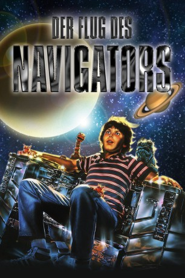
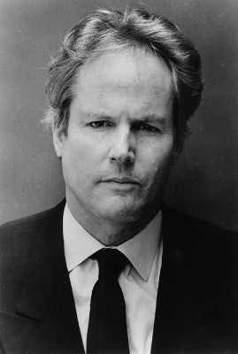
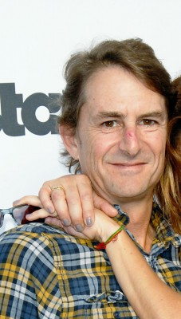
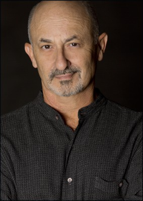
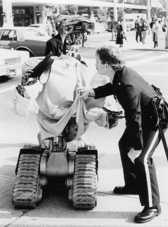

#6078 Der Flug des Navigators
Alternativ: Flight of the Navigator
 
 IMDB-Wertung: 6.9 / 10
IMDB-Wertung: 6.9 / 10  Metascore: 0
Metascore: 0 
David Freeman ist ein ganz normaler 12-jähriger Junge. Eines Tages erlebt er einen harmlosen Sturz und wird bewusstlos. Als er wieder erwacht, erwartet ihn Merkwürdiges: Fremde Leute wohnen in seinem Elternhaus, und die Polizei macht eine verblüffende Entdeckung: David ist seit acht Jahren als vermisst gemeldet... Plötzlich interessiert sich die NASA für ihn und findet heraus, dass es zwischen David und einem kürzlich gefundenen Raumschiff eine Verbindung geben muss. In Davids Gehirn sind rätselhafte Informationen über Sternkarten entfernter Galaxien gespeichert. Ohne diese Karten ist das geheimnosvolle Raumschiff hilflos. Die Außerirdischen brauchen David - den Navigator! Noch ehe die NASA dem Geheimnis auf die Spur kommen kann, klettert David an Bord dieses Raumschiffes, und beginnt die Reise seines Lebens - zurück in die Zeit, aus der er kam
Jahr: 1986
Dauer: 89 Minuten
FSK: 6
Land: USA Studio: Buena Vista PicturesTonspuren: DTS - ,
Untertitel:
Auflösung: 1080p (1920x1080) Größe: 8140 MB
Genre: Sci-Fi, Abenteuer, Familie
Regisseur:  Randal Kleiser
Randal Kleiser
Drehbuch: Zack Whedon
Soundtrack:
Darsteller:
- Joey Cramer als David Freeman
 Paul Reubens als Max
Paul Reubens als Max-  Cliff De Young als Bill Freeman
 Veronica Cartwright als Helen Freeman
Veronica Cartwright als Helen Freeman- Sarah Jessica Parker als Carolyn McAdams
-  Matt Adler als Jeff, 16 years
 Howard Hesseman als Dr. Louis Faraday
Howard Hesseman als Dr. Louis Faraday-  Robert Small als Troy
- Raymond Forchion als Detective Banks
- Robyn Peterson als Scientist #2
 Julio Oscar Mechoso als Hangar Guard #1
Julio Oscar Mechoso als Hangar Guard #1- Fritz Bronner als NASA Technician #2
-  Tim Blaney als Puppeteer
- Bob Barker als Himself , archive footage, uncredited
- Albie Whitaker als Jeff, 8 years
- Jonathan Sanger als Dr. Carr
- Iris Acker als Mrs. Howard
- Richard Liberty als Mr. Howard
- Cynthia Caquelin als Woman Officer
- Ted Bartsch als Night Guard Brayton
- Gizelle Elliott als Technician #1
- Brigid Cleary als Technician #2
- Michael Strano als Technician #3
- Parris Buckner als Scientist #1
- Tony Tracy als Observation Guard
- Philip Hoelcher als NASA Officer
- Butch Raymond als Hangar Guard #2
- Bob Strickland als Control Room Guard #1
- Michael Brockman als Control Room Guard #2
- Louis Cutolo als Radar Technician #1
- Debbie Casperson als Radar Technician #2
- Chase Randolph als Lieutenant King
- John Archie als Agent #1
- Tony Calvino als Agent #2
- Rusty Pouch als Gas Station Attendant
- Robert Goodman als Tourist Man
- Ryan Murray als Tourist Child
- Keri Rogers als Jennifer Bradley
- Peter Lindquist als Newscaster #1
- Jill Beach als Newscaster #2
- Kenneth Ian Davis als Kid in Mustang
- Bruce Lake als Bixby
- Arnie Ross als NASA Technician #1
- Tony Urbano als Puppeteer
- Stephen Luscombe als Himself , archive footage, uncredited
Datei: X:\1986\Flug des Navigators, Der (1986, FSK6, 1920x1080).mkv seit 28.04.2017
Festplatte: HD 1980-1986
 Es gibt insgesamt 50 Filme in der Gruppe '1986'
Es gibt insgesamt 50 Filme in der Gruppe '1986'